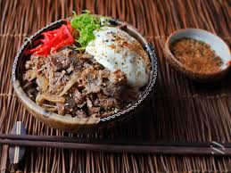

Gyudon

Rice Bowl Home Cooking
Ingredients
- Soy Sauce
- Mirin
- Sake
- Brown Sugar
- Shabu Shabu cut beef
- Rice (pre cooked)
- Cheese
- Onions
Directions
- Brown Meat in Pan
- Drain Meat
- Add onions
- Cook until translucent
- Add soy sauce, mirin, sake, and brown sugar
- Bring to a simmer for 10 minutes
- Serve over rice and enjoy
Back To Deliciousness HQ